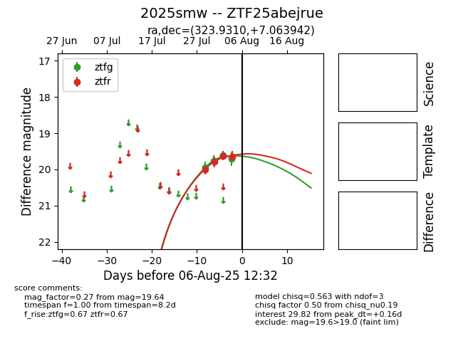

Target 2025smw at 2025-08-06 17:15, see:
FINK: fink-portal.org/2025smw
Lasair: lasair-ztf.lsst.ac.uk/objects/2025smw
ALeRCE: alerce.online/object/2025smw
TNS: wis-tns.org/object/2025smw
YSE: ziggy.ucolick.org/yse/transient_detail/2025smw
alt names
ZTF25abejrue (ztf,fink)
2025smw (tns,yse)
coordinates:
equatorial (ra, dec) = (323.9310,+7.06394)
galactic (l, b) = (61.4635,-31.61502)
photometry
last ztfg=19.71, ztfr=19.64
4 ztfg, 4 ztfr detections
